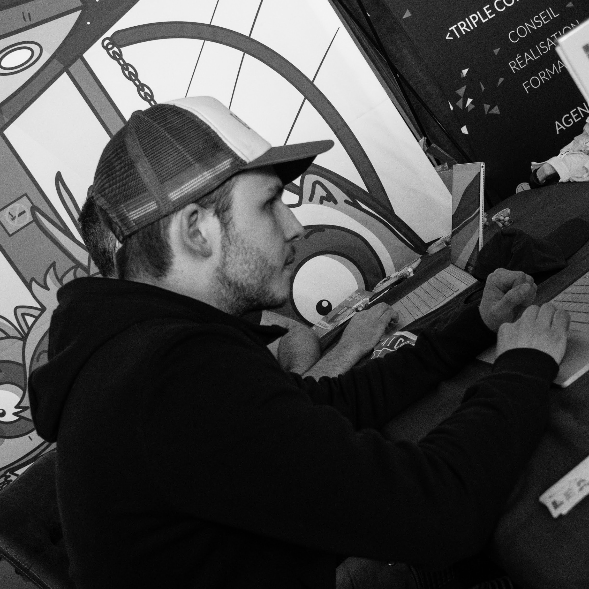
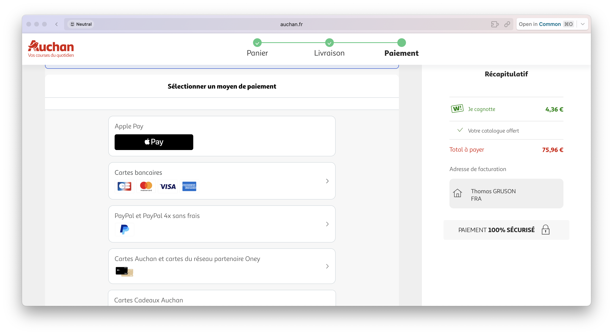
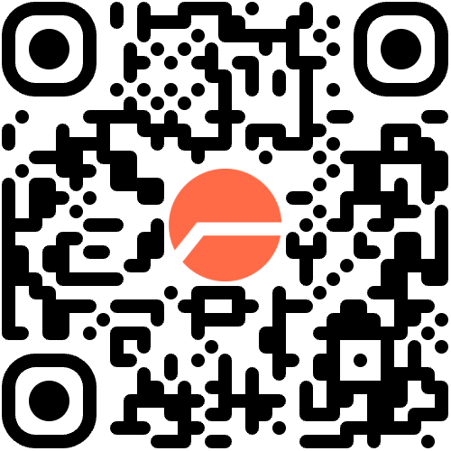

MCP Remote & UCP : comment un agent découvre un marchand et achète pour vous.

De quoi parle-t-on, au juste ?
Chaque marchand câble une intégration sur mesure pour chaque agent IA.
Les utilisateurs cherchent dans l'IA mais achètent ailleurs.
Comment un agent accède aux outils du marchand sans pré-configuration ? → MCP Remote
Comment un agent achète chez le marchand de façon standard ? → UCP
Découverte des outils sans pré-config.
/mcpChaque agent IA devrait être pré-déclaré sur chaque serveur MCP.
Créer un client OAuth, partager un secret, le révoquer… pour chaque client.
Le serveur MCP dit qui il est et où s'authentifier.
Le client se crée son propre client_id. Aucun humain dans la boucle.
J'ajoute https://<mcp-serveur> comme serveur MCP à mon agent préféré.
Pas de client_id, pas de client_secret, aucune config OAuth manuelle.
Le navigateur s'ouvre, l'Authorization Server demande le consentement, je valide.
search_products, cart_add, checkout… utilisables dans la foulée.
« Qui est mon Authorization Server ? »
Le serveur MCP publie l'AS à utiliser.
« Comment je parle à l'AS ? »
L'AS publie ses endpoints et capacités.
« Comment j'obtiens un client_id ? »
Le client se crée lui-même par un POST.
Ensemble, elles forment le protocole de découverte qui branche un client OAuth sur n'importe quel serveur protégé, sans pré-config.
RFC 9728 — exposée par le serveur MCP : /.well-known/oauth-protected-resource
Publique, sans auth. Elle indique :
{
"resource": "https://<mcp-serveur>",
"authorization_servers": [
"https://sso.exemple.fr/realms/customers"
],
"scopes_supported": [
"openid", "profile",
"cart:read", "cart:write",
"order:write"
],
"bearer_methods_supported": ["header"]
}RFC 8414 — exposée par l'AS : /.well-known/oauth-authorization-server
L'AS publie ses endpoints OAuth :
authorization_endpointtoken_endpointregistration_endpoint ← DCRjwks_uri{
"issuer": "https://sso.exemple.fr/realms/customers",
"authorization_endpoint":
".../protocol/openid-connect/auth",
"token_endpoint":
".../protocol/openid-connect/token",
"registration_endpoint":
".../clients-registrations/openid-connect",
"jwks_uri":
".../protocol/openid-connect/certs",
"code_challenge_methods_supported": ["S256"],
"grant_types_supported":
["authorization_code", "refresh_token"]
}RFC 7591 — un POST sur le registration_endpoint.
Le client déclare son nom, ses redirect URIs, ses grant types, ses scopes.
L'AS retourne un client_id dynamiquement émis.
Flow sans humain, zéro pré-config.
POST /clients-registrations/openid-connect
{
"client_name": "Claude Desktop",
"redirect_uris": [
"claude://oauth/callback"
],
"grant_types": [
"authorization_code",
"refresh_token"
],
"token_endpoint_auth_method": "none",
"scope": "openid cart:read cart:write"
}
→ 201 Created
{
"client_id": "claude-desktop-7a8e2f...",
"client_id_issued_at": 1747724400
}→ pressez la flèche pour dérouler la chorégraphie étape par étape.
audLe réflexe OAuth : aud = client_id.
Mais avec le DCR, chaque client a un client_id différent — la validation casse.
La spec MCP impose RFC 8707 :
resource=<url MCP>aud = url MCPaudPOST /authorize
?client_id=claude-code-7a8e...
&resource=https://<mcp-serveur>
&code_challenge=...
→ Token émis avec :
{
"iss": "https://sso.marchand.fr/realms/customers",
"aud": "<mcp-serveur>",
"scope": "cart:read cart:write"
}Côté gateway : jwtVerify(token, jwks, { issuer, audience }).
REJOUÉE EN LIVE Ce que la démo montrait, étape par étape :

Résultat : un lien de paiement, généré par l'agent.
Stateless, sur GKE. Sert le MCP et le PRM et proxy REST.
L'AS existant. Ajout d'une policy DCR et de scopes.
Le catalogue, le panier, les wishlists, les magasins, le checkout réels.
N'importe quel client MCP HTTP. Et demain : un plugin grand public.
Une app ChatGPT, c'est un serveur MCP remote. Publiée, elle touche le grand public.
Un custom connector = une URL de serveur MCP remote. Référencé dans le Directory de Claude.
Le serveur de la démo, je le publie tel quel — aucun re-développement.
Chaque utilisateur devient un client OAuth sans pré-déclaration. C'est ça, le passage à l'échelle.
Le DCR fait tourner le MCP authentifié en production aujourd'hui. Trois limites connues, déjà adressées :
Chaque client crée son client_id : l'AS accumule des enregistrements, sans fin.
Rien ne fait expirer ni ne révoque les enregistrements obsolètes.
Le client déclare un nom ; rien ne garantit qu'il est bien qui il prétend.
Et ça bouge vite : SEP-991 (juil. 2025), draft adopté par l'IETF OAuth WG (oct. 2025), CIMD recommandé par défaut dans la spec MCP de nov. 2025.
Le client_id est une URL HTTPS qui pointe un JSON public décrivant le client.
Déjà supporté : Keycloak, Auth0, WorkOS, Authlete.
{
"client_id":
"https://claude.ai/.well-known/oauth-client",
"client_name": "Claude",
"redirect_uris": [
"https://claude.ai/oauth/callback"
],
"grant_types": [
"authorization_code", "refresh_token"
],
"token_endpoint_auth_method": "none"
}La transaction, standardisée.
Annonce officielle le 11 janvier 2026 sur le Google Developers Blog.
Shopify, Etsy, Wayfair, Target, Walmart — co-design dès l'origine.
Distributeurs, plateformes e-commerce et acteurs du paiement ont rejoint la spec.
Spec publique sur ucp.dev, code de référence sur GitHub.
Chaque marchand devait builder une intégration sur mesure pour optimiser l'interaction de l'agent IA.
Les utilisateurs recherchent dans les IA mais achètent ailleurs — le parcours casse.
Exposer ses capacités une fois, consommé par tous les agents.
« Turn AI interactions into instant sales » — Google Developers Blog.
D'abord le retail ; depuis Google Marketing Live 2026, aussi l'hôtellerie et la livraison de repas.
Walmart, Target, Best Buy, The Home Depot, Macy's, Zalando.
Booking.com, Expedia, Hilton, Marriott, Accor, Amadeus.
DoorDash, Uber Eats, Square, Toast.
Côté paiement : Visa, Mastercard, American Express, Stripe, Adyen, Affirm, Klarna.
L'agent peut conclure l'achat sans quitter Search.
L'utilisateur demande à Gemini d'acheter — la transaction se fait via UCP chez le marchand.
Tout client qui parle UCP consomme le profile : ChatGPT, Claude, agents custom…
« Full ownership of customer relationships, data, and the post-purchase experience. »
/.well-known/ucpL'agent veut savoir ce que le marchand sait faire → un GET sur /.well-known/ucp.
Comme A2A a son AgentCard, UCP a son UCP profile :
{
"ucp": {
"version": "2026-01-23",
"services": {
"dev.ucp.shopping": { "rest": { "url": "/ucp" } }
},
"capabilities": {
"dev.ucp.shopping.checkout": {
"version": "2026-01-23",
"spec": "https://ucp.dev/specs/checkout"
},
"dev.ucp.shopping.fulfillment": {
"extends": "dev.ucp.shopping.checkout"
}
},
"payment_handlers": { "com.google.pay": {} }
},
"signing_keys": ["..."]
}Opérations CRUD sur une checkout session :
POST /checkout # create
GET /checkout/{id} # read
PUT /checkout/{id} # update
POST /checkout/{id}/complete
POST /checkout/{id}/cancelRequest-Signature, Idempotency-KeyLe même contrat, exposé en MCP binding :
Le pont avec la 1ʳᵉ partie : le serveur MCP de la démo pourrait porter un binding UCP.
Full-text + filtres : l'agent interroge le catalogue temps réel du marchand.
Lookup d'un produit ou d'une variante : prix, stock, options à jour.
L'agent assemble un panier multi-items avant le checkout.
OAuth 2.0 : rattache le compte client — prix membre, fidélité, livraison.
Session stateful par défaut : create / update / complete. Mode stateless + redirect en option.
État de la commande, retours, webhooks signés vers la plateforme.
extends checkout. Application et validation des discounts.
extends checkout. Shipping, click & collect, créneaux, split shipments.
UCP est un protocole de couches :
Les extensions suivent le reverse-domain naming — comme un package Java.
{
"name": "com.auchan.fidelite.points",
"extends": "dev.ucp.shopping.checkout",
"version": "2026-05-01",
"schema": "https://auchan.fr/ucp/fidelite.json"
}Votre extension étend une capability standard sans la casser.
Le marchand reste Merchant of Record — relation client, données, SAV.
Marchands américains éligibles. Surfaces : AI Mode dans Search + l'app Gemini.
UCP n'est pas en prod — c'est de la veille. Mais la spec publique permet de prototyper un /.well-known/ucp dès aujourd'hui.
MCP Remote + DCR = serveur consommable par tous les agents, utilisable aujourd'hui : c'est prod live.
PRM (9728) + AS Metadata (8414) + DCR (7591). CIMD à venir.
Pas encore en prod : c'est la carte de visite du marchand. Comprenez-le avant qu'il arrive.
📚 modelcontextprotocol.io · RFC 9728 · 8414 · 7591 · 8707 · ucp.dev
Questions ? Envie d'en discuter ?

Votre feedback !